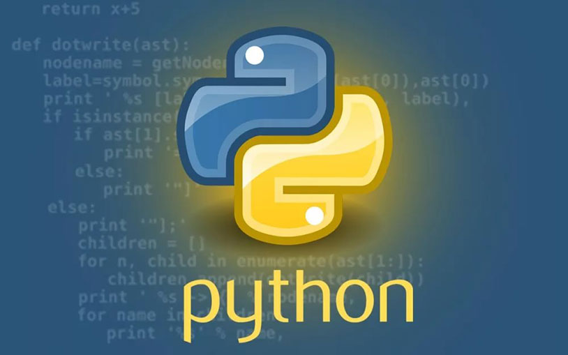
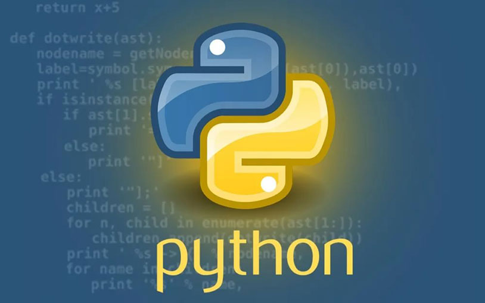

Dasturlash tili – maʼlumotlar (axborotlar)ni va ularni elektron mashinalarda ishlash algoritmlari (dasturlari)ni bayon qilish uchun moʻljallangan rasmiy til; odamning elektron mashina bilan bogʻlanishi uchun ishlatiladigan shartli belgilar tizimi. Dasturlash tili tabiiy til bilan shartli mashina tili orasidagi oʻrinni egallaydi. Dasturlash tilining asosiy vazifasi dasturlar tuzish (dasturlash) vositasi boʻlishi, yaʼni maʼlumotlarni ifodalash va ularni EHM (kompyuter) da ishlashda qoʻllanishidan iborat[1]. Dasturlash tillari sintaksisi (shakl) va semantikasi (maʼnosi) nuqtai nazaridan tavsiflanadi, odatda rasmiy til bilan belgilanadi. Tillar odatda tip tizimi, oʻzgaruvchilar va xatolarni qayta ishlash mexanizmlari kabi xususiyatlarni taqdim etadi. Dasturlarni bajarish uchun dasturlash tilini, yaʼni tarjimon yoki kompilyatorni amalga oshirish talab qilinadi . Tarjimon toʻgʻridan-toʻgʻri manba kodini bajaradi, kompilyator esa bajariladigan dasturni ishlab chiqaradi.
/PHP.jpg) 

Kompyuter arxitekturasi dasturlash tillarining dizayniga kuchli taʼsir koʻrsatdi, eng keng tarqalgan turi (maʼlum bir tartibda operatsiyalarni amalga oshiradigan imperativ tillar) mashhur fon Neyman arxitekturasida yaxshi ishlash uchun ishlab chiqilgan . Dastlabki dasturlash tillari apparat bilan chambarchas bogʻlangan boʻlsa-da, vaqt oʻtishi bilan ular yanada soddalik uchun amalga oshirish tafsilotlarini yashirish uchun koʻproq mavhumlikni ishlab chiqdilar .